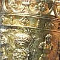
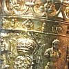

Lé Rouai Charles II, not' Duc, fit présent d'la Mâsse Rouoyale à l'Île dé Jèrri lé vîngt-huit d'Novembre 1663. Oulle est faite en argent dé grand' valeu, et est quat' pids neu et d'mie pouces d'londgeu. Ou pèse deux chents trente-sept onches (quatorze livres treize onches).

L'înscription êcrite sus l'pid d'la Mâsse est en Latîn, et né v'chîn la traduction en Jèrriais:
| Ch'n'est pon tous tch'i' juge d'êt' dîngne d'eune telle rêcompense. Charles Deux, Rouai d'la Grande Brétangne, la France et l'Irlande, comme preuve dé sa rouoyale affection pour l'Île dé Jèrri, où'est tch'il a 'té deux fais r'chu en seûtheté auprès aver 'té mîns hors du reste d'ses rouoyaumes, a voulu qué chutte mâsse rouoyale sait consacrée à la postérité, et a ordonné qu'à l'av'nîn ou sait portée l'avant au Bailli et la Cour en souv'nîn continnuel dé lus fidélité, pas seulement à san vénéthabl'ye péthe Charles l'Preunmyi, mais à Sa Majesté duthant la fureur des dgèrres civiles quand l'Île fut consèrvée par les illustres Ph'lippe et George de Carteret, Bailli et Gouvèrneux dé ladite Île. |
Quand la Cour Rouoyale et l's Êtats d'Jèrri sont à siégi, la Mâsse est pliaichie d'but d'vant l'siège du Bailli.
 
